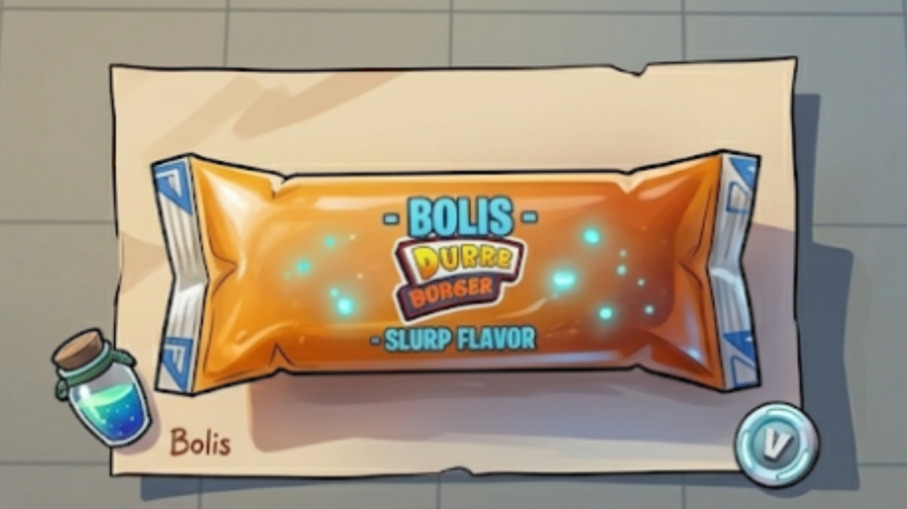
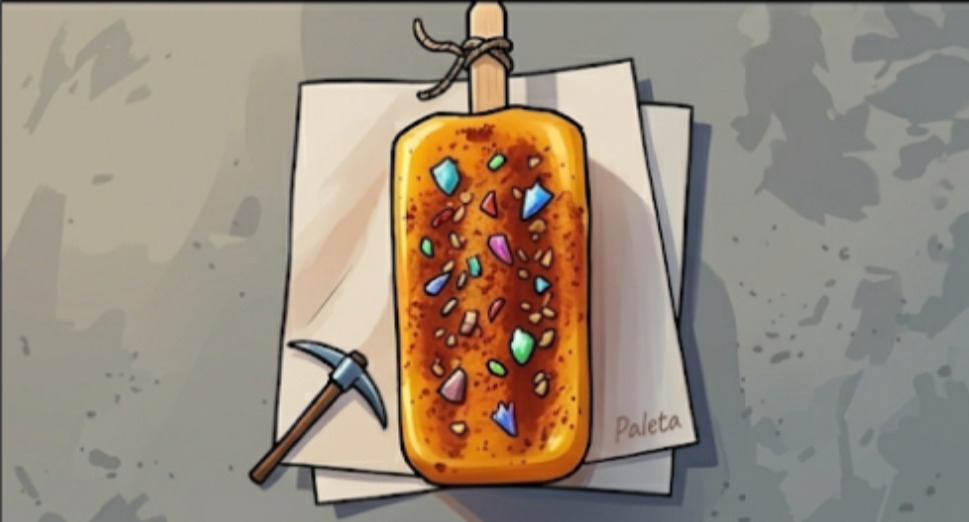
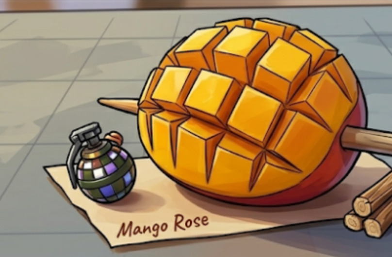

Sabores únicos inspirados en el mango.
BachiMango presenta una selección de productos desarrollados a partir del mango, combinando creatividad, sabor y aprovechamiento responsable de los recursos disponibles. Cada propuesta busca ofrecer una experiencia diferente para los consumidores.

Más vendidoUna opción refrescante elaborada con mango, ideal para disfrutar durante los días de calor gracias a su sabor natural y textura agradable.
Bebida preparada para quienes disfrutan la combinación entre sabores dulces, ácidos y ligeramente picantes.

RecomendadaAlternativa congelada que conserva el sabor característico del mango, ofreciendo una opción práctica y deliciosa.

PopularBotana preparada para quienes buscan una mezcla de sabores dulces y picantes en un mismo producto.
Los valores mostrados son estimaciones generales y pueden variar dependiendo de los ingredientes y el proceso de elaboración de cada producto.
| Nutriente | Cantidad por 100 g |
|---|---|
| Energía | 90 kcal |
| Carbohidratos | 22 g |
| Proteínas | 1 g |
| Grasas | 0 g |
| Fibra | 1 g |
| Vitamina C | 20 mg |